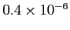

Next: DONORDENSITY
Up: GNU Archimedes Commands Syntax
Previous: COMMENTS
Contents
When a new device is defined, the user needs to specify where the edges are insulator, where there are ohmic contacts and where the Schottky contacts are positioned. Even, you can have the need of applying a potential on a isulator edge (for simulation purposes). All this definitions are possible by the use of only one command, i.e. CONTACT. Let us describe the syntax of this command.
This command can be described as follows
CONTACT place init_pos fin_pos kind pote dens
where place can be one of the following choice
- UP. This in invoked when the contact have to be placed on the upper edge of the device.
- DOWN. This in invoked when the contact have to be placed on the bottom edge of the device.
- RIGHT. This in invoked when the contact have to be placed on the right edge of the device.
- LEFT. This in invoked when the contact have to be placed on the left edge of the device.
Furthermore, init_pos is the initial position of the contact, fin_pos is the final position of the same contact.
The choice kind can be one of the following
- INSULATOR. This is invoked in the case the contact is of insulator type. In this case, the contact will be a "reflective mirror" for the particles, i.e. the particles can not go out or inside the device through that contact.
- OHMIC. This is invoked in the case the contact is of ohmic type. This kind of contact can be considered as a gate through which the particles can go out. Furthermore, it can be considered as a particle reservoir from which particles can go into the device.
- SCHOTTKY. This is invoked in the case the contact is of Schottky type. This kind of contact is the same as the ohmic one with the ecception that this is not a particle reservoir, so this contact is only a absorbing one.
The choice pote is the potential which is applied to this contact. In the case the edge, or a part of it, is of insulator type and there is no potential applied there, then it have to be put to 0.
The choice dens is the density of the particle reservoir, so it has to be specified only in the ohmic contact case.
When an edge, or part of it, will not be specified by the user, it will be considered as of insulator type with zero potential applied, as default.
Here we report some examples.
If we want to specify that the upper edge is of insulator type, with no applied potential, in a diode with x-direction length 1.0 micron, than the user have to write
CONTACT 0.0 1.0e-6 INSULATOR 0.0
If we want to specify that the left edge is of ohmic type, with zero applied potential and
, in a diode with y-direction length 0.1 micron, than the user have to write
CONTACT 0.0 0.1e-6 OHMIC 0.0 1.e23
Finally, if a user wants to specify that a part of the upper edge is of Schottky type, with
Volts applied potential starting from
to

, in a MESFET, than the user have to write
CONTACT 0.2e-6 0.4e-6 SCHOTTKY -0.8
Next: DONORDENSITY
Up: GNU Archimedes Commands Syntax
Previous: COMMENTS
Contents
Didier Link
2007-05-18